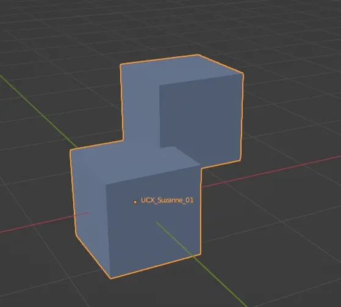
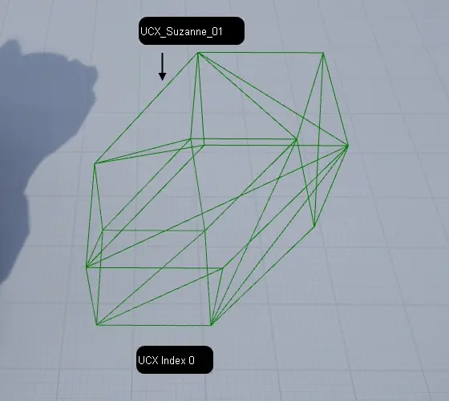

Common Importing Assets options#
Create Content Folder Hierarchy#
If assets are grouped or parented, this feature will place those assets in separate folders with same name as group/parent name.
Shared/Linked assets will be placed inside of folder containing first asset in hierarchy that uses it.
See also
Assets used in this example:
Import as Dynamic#
Sets actor mobility of all imported actors to dynamic, instead of static.
Hierarchy type#
Create one Blueprint Asset
Imported assets will be added to a single blueprint that will be placed in current level. Groups will be converted into scene components.
Create one Actor with components
Imported assets will be added to single actor in level, without a blueprint.
Actor containing assets will not be shown in asset browser. Assets themselves, will be shown.
Create Level actors
Imported assets will be added to level as separate actors. Actors will be automatically attached to parents, if applicable. See Attach Actor
Force Front XAxis#
If your assets are front towards X axis instead of Y- select this option.
Note
While exporting from blender, it looks like it should be aligned towards X- not X axis while this is enabled.
Bake Pivot in Vertex#
Sets custom pivot point position of imported mesh as the pivot point in Unreal Engine
Note
Blender bakes custom mesh pivot point while exporting FBX files.
Import Static Mesh LOD#
Imports custom static mesh LODs. See Creating Static Mesh LOD
Disabled imports only LOD0
Import Skeletal Mesh LOD#
Imports custom skeletal mesh LODs. See Creating Skeletal Mesh LOD
Disabled imports only LOD0
Invert Normal Maps#
If your materials contain OpenGL type Normal Maps, use this option to automatically convert them to DirectX format. See Normal Maps
Generate Missing Collision#
If any asset inside of FBX file does not have custom collsion, this feature will generate it.
Note
This does not override custom collision. See also: Creating Custom Asset Collision
Vertex Color Import Option#
Replace - Imports Vertex Colors stored in the FBX file.
Ignore - Does not import vertex colors set in FBX file
Override - Sets vertex color to all verticles to color specified in Vertex Override Color
Vertex Override Color#
If Vertex Color Import Option is set to override, this defines what Vertex Color to set to all verticles
Remove Degenerates#
This feature removes all degenerate triangles. (triangles that are squashed and there is no face visible)
Build Reversed Index Buffer#
Optimization technique that is used for meshes with negative scale.
Tip
If the mesh will always have positive scale, this can be turned off.
By ticking this option on, these buffers will be created:
mesh indices reversed index buffer
reversed depth-only index buffer
Generate Lightmap UVs#
Generates an UVMap used for lightmaps.
note
New UVMap will have highest UVMap index.
See Creating Lightmap UVs
One Convex Hull per UCX#
If a single custom collision object consists of multiple floating meshes, this option merges them into a single convex hull.
 {kind=link}
{kind=link}
Leaving this option unticked, Unreal Engine will split it into multiple collision meshes, the same way as if it would be separated in DCC Software that the mesh is created in.
{kind=link}
note
Multiple custom collision objects created in DCC Software (eg. UCX_Mesh_01 and UCX_Mesh_02) will not be combined into one.
Import Normal Method#
Compute Normals - Ignores normals stored in FBX file and generates new data.
Import Normals - Imports normal data from FBX file but generates tangents and binormals data
Import Normals and Tangents - Imports both normals, tangents and binormals from FBX file.
Normal Generation Method#
If Import Normal Method is not set to Import Normals and Tangents, generates new normal data using selected alghoritm.
Tip
The Mikk TSpace requires a correctly mapped UVMap, otherwise "Object has Degenerate Tangent bases which will results in incorrect shading" error will pop-up while importing.
This may lead to inaccurate lightining.
The solution is to either use the Built In alghoritm, or to properly UV map your asset.
Offset Translation#
Imported using content browser#
Adds or subtracts position of static mesh
Imported into the level#
Modifies world position of Scene actor, that imported assets from source file will be set to be a child of.
Note
Meshes will be imported as normal, without those changes in their blueprints.
Offset Rotation#
Imported using content browser#
Adds or subtracts rotation of the static mesh
Imported into the level#
Add or subtract world rotation of Scene actor that imported assets from source file will be set to be a child of.
Note
Meshes will be imported as normal, without those changes in their blueprints.
Offset Uniform Scale#
Imported using content browser#
Scales the static mesh
Imported into the level#
Set world scale multiplier of Scene actor that imported assets from source file will be set to be a child of.
Note
Meshes will be imported as normal, without those changes in their blueprints.
Force All Mesh as Type#
Forces all meshes from file to be converted into static or skeletal mesh assets.
Import Lods#
Toggles importing LODs of static and skeletal meshes.
Vertex Color Import Option#
Replace - Imports Vertex Colors for new meshes or replaces them when reimporting
Ignore - Does not import Vertex Colors or does not replace them when Reimporting
Override - Sets new Vertex Color to all verticles with values set in Vertex Override Color
Vertex Override Color#
Sets new Vertex Color to all verticles using provided value.
Recompute Normals#
Forces to recompute mesh normals instead of importing normals stored in source file.
Recompute Tangents#
Forces to recompute normals instead of importing normals stored in source file.
Use Mikk TSpace#
Uses Mikk TSpace alghoritm to recompute normals, instead of Built In alghoritm.
See Normal Generation Method for more info about differences in those alghoritms
Compute Weighted Normals#
[TODO]
Use High Precision Tangent Basis#
[TODO]
Use Full Precision UVs#
Use Backwards Compatible F16Trunc UVs#
Meshes In Bone Hierarchy#
Use T0As Ref Pose#
Import Animations#
Import Bone Tracks#
Animation Length#
Frame Import Range#
Use 30Hz to Bake Bone Animation#
Custom Bone Animation Sample Rate#
Snap To Closest Frame Boundary#
Import Attributes as Curves or Animation Attributes#
Set Material Curve Type#
Material Curve Suffixes#
Remove Redundant Keys#
Do not import curves with only 0 values#
Delete Existing Animation Attributes#
Delete Existing Animation Curves#
Delete Existing Morph Target Curves#
Import Materials#
Material Import#
Parent Material#
Import Skeletal Meshes#
Import Content Type#
Import Morph Targets#
Update Skeleton Reference Pose#
Create Physics Asset#
Threshold Position#
Threshold Tangent Normal#
Threshold UV#
Morph Threshold Position#
Import Static Meshes#
Import Collision According To Mesh Name#
One Conves Hull Per UCX#
Build Nanite#
Build Reversed Index Buffer#
Generate Lightmap UVs#
Two Sided Disatnce Field Generation#
Enable Physical Material Mask#
Min Lightmap Resolution#
Source Lightmap Index#
Destination Lightmap Index#
Build Scale#
Distance Field Resolution Scale#
Distance Field Replacement Mesh#
Max Lumen Mesh Cards#
Import Textures#
Detect Normal Map Texture#
Flip Normal Map Green Channel#
Import UDIMs#
File Extensions To Import as Long Lat Cubemap#
Prefer Compressed Source Data#
Allow Non Power of Two#
SOCKET_MeshName_00
do not apply scale, it’s value is imported into unreal. 1.0 is ~ 2meter scale socket